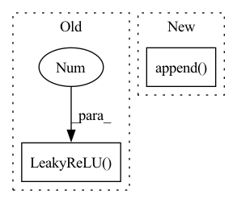

Pattern ID :13403
Before Change
super().__init__()
self.net = nn.Sequential(
nn.Linear(n_in, n_h),
nn.LeakyReLU(0.2 ) ,
nn.Linear(n_h, n_h),
nn.LeakyReLU(0.2),
nn.Linear(n_h, n_h),After Change
layers = []
for s1, s2 in zip(layer_sizes, layer_sizes[1:]):
layers.append(nn.Linear(s1, s2))
layers.append( nn.LeakyReLU(leaky_a))
super().__init__(*layers[:-1]) // drop last ReLU
In pattern: SUPERPATTERN
Frequency: 3
Non-data size: 2
Instances Fragment ID: 45166113
Project Name: janosh/torch-mnf
Commit Name: 0664a2ea516f30dda5d538a8a683b08e62e71948
Time: 2020-11-11
Author: janosh.riebesell@gmail.com
File Name: torch_mnf/models/mlp.py
M Class Name: MLP
N Class Name: MLP
M Method Name: __init__(1)
N Method Name: __init__(4)
M Parent Class: nn.Sequential
N Parent Class: nn.Module
M File Name: torch_mnf/models/mlp.py
N File Name: torch_mnf/models/mlp.py
M Start Line: 7
M End Line: 17
N Start Line: 8
N End Line: 12
Before Change
def block(m, a, b):
m.append(tf.keras.layers.BatchNormalization(momentum=0.99,
epsilon=1e-4))
m.append(tf.keras.layers.LeakyReLU(0. ) )
m.append(
SubmanifoldSparseConv(in_channels=a,
filters=b,After Change
@staticmethod
def block(layers, a, b, residual_blocks):
if residual_blocks:
layers.append( ResidualBlock(a, b))
else:
layers.append(BatchNormBlock())
layers.append(ReLUBlock())
layers.append( Fragment ID: 45166112
Project Name: isl-org/open3d-ml
Commit Name: 67123f7e9d5dbbe6a73c42ef648093a7d25ace4a
Time: 2021-05-11
Author: sanskaragrawal107@gmail.com
File Name: ml3d/tf/models/sparseconvnet.py
M Class Name: UNet
N Class Name: UNet
M Method Name: block(4)
N Method Name: block(3)
M Parent Class: tf.keras.layers.Layer
N Parent Class: tf.keras.layers.Layer
M File Name: ml3d/tf/models/sparseconvnet.py
N File Name: ml3d/tf/models/sparseconvnet.py
M Start Line: 357
M End Line: 363
N Start Line: 630
N End Line: 641
Before Change
// Upsampling convolutional layer.
self.upsampling = nn.Sequential(
nn.Conv2d(64, 64, (3, 3), (1, 1), (1, 1)),
nn.LeakyReLU(0.2 , True)
)
// Reconnect a layer of convolution block after upsampling.
self.conv3 = nn.Sequential(After Change
// Upscale block
upsampling = []
for _ in range(2):
upsampling.append( UpsampleBlock(64))
self.upsampling = nn.Sequential(*upsampling)
// Output layer.
self.conv_block3 = nn.Conv2d(64, 3, (9, 9), (1, 1), (4, 4)) Fragment ID: 45166118
Project Name: lornatang/esrgan-pytorch
Commit Name: a9031d71f6f27449fe63ec703344577e35fa87cb
Time: 2022-04-15
Author: liuchangyu1111@gmail.com
File Name: model.py
M Class Name: Generator
N Class Name: Generator
M Method Name: __init__(1)
N Method Name: __init__(1)
M Parent Class: nn.Module
N Parent Class: nn.Module
M File Name: model.py
N File Name: model.py
M Start Line: 149
M End Line: 173
N Start Line: 120
N End Line: 147